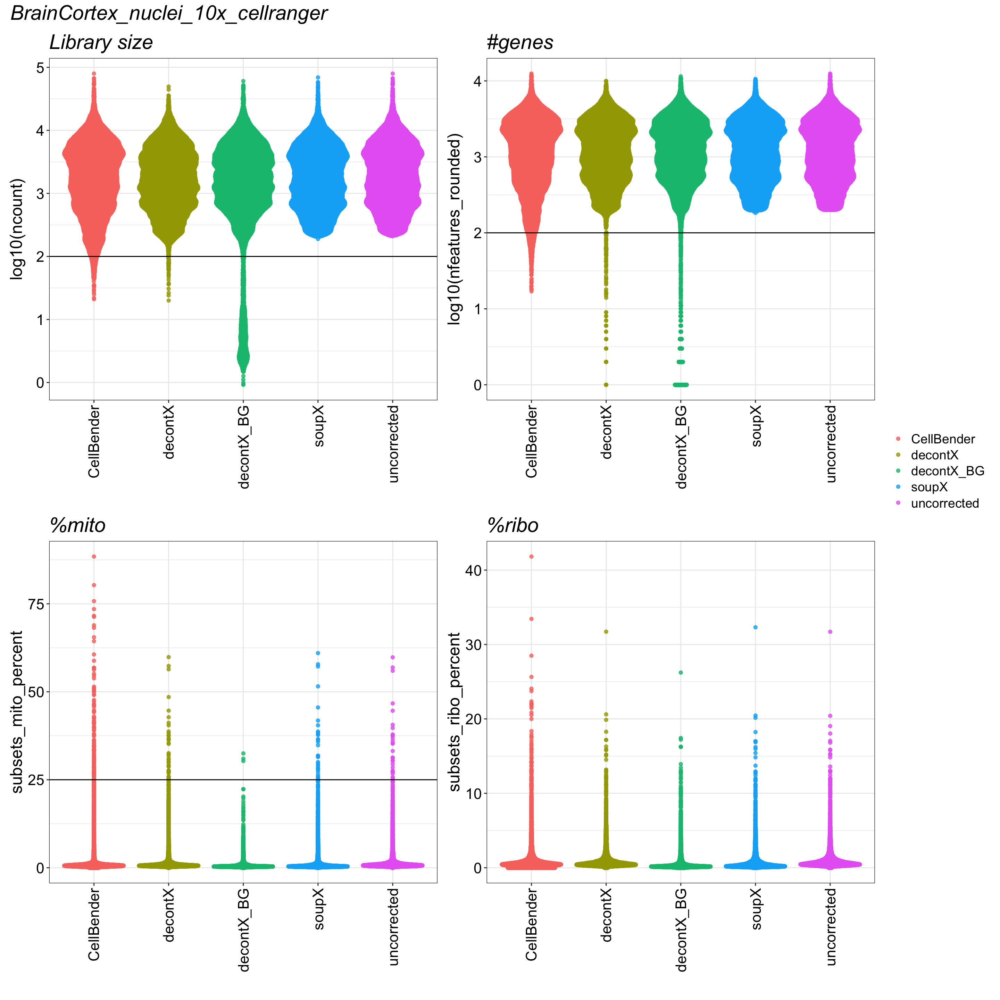
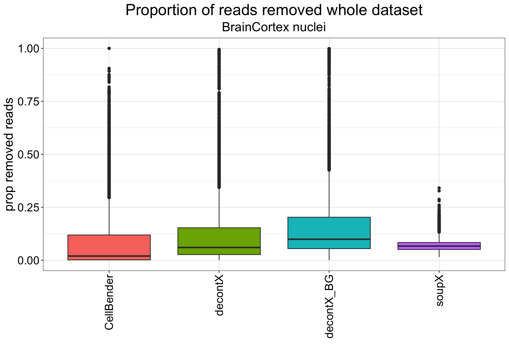
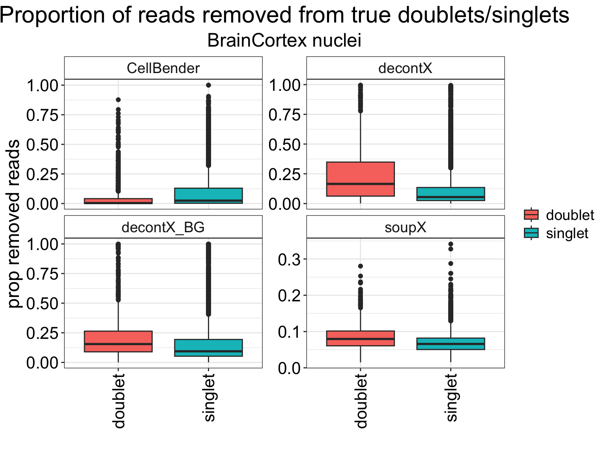

Last updated: 2026-08-04
Checks: 7 0
Knit directory:
ambient_doublet_singlecell/
This reproducible R Markdown analysis was created with workflowr (version 1.7.1). The Checks tab describes the reproducibility checks that were applied when the results were created. The Past versions tab lists the development history.
Great! Since the R Markdown file has been committed to the Git repository, you know the exact version of the code that produced these results.
Great job! The global environment was empty. Objects defined in the global environment can affect the analysis in your R Markdown file in unknown ways. For reproduciblity it’s best to always run the code in an empty environment.
The command set.seed(20260605) was run prior to running
the code in the R Markdown file. Setting a seed ensures that any results
that rely on randomness, e.g. subsampling or permutations, are
reproducible.
Great job! Recording the operating system, R version, and package versions is critical for reproducibility.
Nice! There were no cached chunks for this analysis, so you can be confident that you successfully produced the results during this run.
Great job! Using relative paths to the files within your workflowr project makes it easier to run your code on other machines.
Great! You are using Git for version control. Tracking code development and connecting the code version to the results is critical for reproducibility.
The results in this page were generated with repository version 933101b. See the Past versions tab to see a history of the changes made to the R Markdown and HTML files.
Note that you need to be careful to ensure that all relevant files for
the analysis have been committed to Git prior to generating the results
(you can use wflow_publish or
wflow_git_commit). workflowr only checks the R Markdown
file, but you know if there are other scripts or data files that it
depends on. Below is the status of the Git repository when the results
were generated:
Ignored files:
Ignored: .DS_Store
Ignored: .RData
Ignored: .Renviron
Ignored: .Rhistory
Ignored: .Rproj.user/
Ignored: analysis/obsolete/
Ignored: analysis/untracked_BrainCortex_nuclei_10x_QC_filtering_deMULTIplex2.Rmd
Ignored: analysis/untracked_BrainCortex_nuclei_10x__LungCancer_10x_CMO_check_CMO_ADT_distribution.Rmd
Ignored: analysis/untracked_BrainCortex_nuclei_10x_evaluate_doublet_calling_deMULTIplex2.Rmd
Ignored: analysis/untracked_BrainCortex_nuclei_10x_inspect_SampleOfOrigin_false_singlets.Rmd
Ignored: analysis/untracked_BrainCortex_nuclei_10x_run_deMULTIplex2.Rmd
Ignored: analysis/untracked_figure_05.Rmd
Ignored: claude_logs/
Ignored: code/TMP_notes.R
Ignored: output/data/
Ignored: output/figures/
Ignored: output/results/
Ignored: renv/
Ignored: scp_file.txt
Untracked files:
Untracked: CLAUDE.md
Untracked: analysis/figure_05_all_plots_explore.Rmd
Untracked: analysis/figure_05_temp.Rmd
Untracked: code/ambient_tools/
Untracked: tmp.R
Unstaged changes:
Modified: .gitignore
Modified: analysis/figure_03.Rmd
Note that any generated files, e.g. HTML, png, CSS, etc., are not included in this status report because it is ok for generated content to have uncommitted changes.
These are the previous versions of the repository in which changes were
made to the R Markdown
(analysis/BrainCortex_nuclei_10x_QC_filtering.Rmd) and HTML
(docs/BrainCortex_nuclei_10x_QC_filtering.html) files. If
you’ve configured a remote Git repository (see
?wflow_git_remote), click on the hyperlinks in the table
below to view the files as they were in that past version.
| File | Version | Author | Date | Message |
|---|---|---|---|---|
| html | 30cb722 | Michelle Meier | 2026-07-30 | Build site. |
| html | eca7cb1 | Michelle Meier | 2026-07-15 | Build site. |
| Rmd | e3bfb6e | Michelle Meier | 2026-07-15 | wflow_publish("analysis/BrainCortex_nuclei_10x_QC_filtering.Rmd") |
| html | 00dec9e | Michelle Meier | 2026-07-15 | Build site. |
| Rmd | 20e582a | Michelle Meier | 2026-07-15 | wflow_publish("analysis/BrainCortex_nuclei_10x_QC_filtering.Rmd") |
| html | bc5f8a9 | Michelle Meier | 2026-07-15 | Build site. |
| Rmd | dfbbf4d | Michelle Meier | 2026-07-15 | wflow_publish("analysis/BrainCortex_nuclei_10x_QC_filtering.Rmd") |
This markdown performs very lenient QC filtering on all ambient RNA corrected + the uncorrected datasets. We are applying the same thresholds used for the original filtering.
Our main goal here is to eliminate cells with a very low library size and/or number of genes detected, as well as cells with unusually high % mitochondrial reads as their presence may interfere with doublet calling. We define the number of genes expressed as the number of genes that have a count >0.5.
Droplets that fall into the following filtering categories are generally viewed as “empty” and removed prior to doublet calling.
lib size < 100 #THIS IS SMALLER THAN OTHERS BASED ON DISTRIBUTION
#genes detected < 150 #THIS IS SMALLER THAN OTHERS BASED ON DISTRIBUTION
%mito > 25%
In addition, we will remove the non-empty droplets that failed to get a hashtag assignment as they are most likely only debris and are in any case unusable downstream anyway.
The result for this analysis is a tsv file containing the filtered barcodes which will be exported into the original 10x folder.
suppressPackageStartupMessages({
library(SingleCellExperiment)
library(tidyverse)
library(readr)
library(here)
library(Seurat)
library(scater)
library(SoupX)
library(qs2)
library(DropletUtils)
library(patchwork)
})files <- list.files(path = here("output/data/BrainCortex_nuclei_10x"),
pattern = "^BrainCortex_nuclei_10x_cellranger",
full.names = T)plot_sizing <- theme_bw() +theme(axis.title = element_text(size = 18),
axis.text = element_text(size = 16, colour = "black"),
plot.title = element_text(size = 22),
plot.subtitle= element_text(size = 18),
legend.text = element_text(size = 14),
legend.title = element_blank())
plot_sizing_keep_legend <- theme_bw() +theme(axis.title = element_text(size = 18),
axis.text = element_text(size = 16, colour = "black"),
plot.title = element_text(size = 22),
legend.text = element_text(size = 14),
legend.title = element_text(size=16))
rotate_x <- theme(axis.text.x = element_text(angle = 90, vjust = 0.5, hjust=1))
strip_fix <- theme(strip.background = element_rect(fill = "white"),
strip.text = element_text(size = 14))
title_size <- theme(plot.title = element_text(size = 22, face = "italic"))This function creates plots for lib size, #genes, %mito and %ribo for all ambient tools + uncorrected and exports a tsv containing the filtered barcodes.
run_make_filter_plots_barcode_export <- function(path_in){
# MAKE PLOTS
all_metas <- lapply(path_in, function(PATH){
out <- read_tsv(paste0(PATH, "/metadata.tsv"), show_col_types = F)
out$ambient_tool <- ifelse(basename(PATH) == "BrainCortex_nuclei_10x_cellranger",
"uncorrected",
gsub("BrainCortex_nuclei_10x_cellranger_", "", basename(PATH)))
return(out)
}) %>% bind_rows()
#temporary fix for plotting, if its uncorrected make ncount_raw==ncount etc
all_metas$ncount[all_metas$ambient_tool == "uncorrected"] <- all_metas$ncount_raw[all_metas$ambient_tool == "uncorrected"] #count
all_metas$nfeatures_rounded[all_metas$ambient_tool == "uncorrected"] <- all_metas$nfeatures_raw[all_metas$ambient_tool == "uncorrected"] #feature
all_metas$subsets_mito_percent[all_metas$ambient_tool == "uncorrected"] <- all_metas$subsets_mito_percent_raw[all_metas$ambient_tool == "uncorrected"] #mito
all_metas$subsets_ribo_percent[all_metas$ambient_tool == "uncorrected"] <- all_metas$subsets_ribo_percent_raw[all_metas$ambient_tool == "uncorrected"] #mito
p1 <- all_metas %>%
ggplot(., aes(x=ambient_tool, y=log10(ncount)))+
ggbeeswarm::geom_quasirandom(aes(color = factor(ambient_tool)), size = 1.5, alpha = 0.8)+
plot_sizing + rotate_x + ggtitle("Library size")+ xlab("")+
geom_hline(yintercept = log10(100))
p2 <- all_metas %>%
ggplot(., aes(x=ambient_tool, y=log10(nfeatures_rounded)))+
ggbeeswarm::geom_quasirandom(aes(color = factor(ambient_tool)), size = 1.5, alpha = 0.8)+
plot_sizing + rotate_x + ggtitle("#genes")+xlab("")+
geom_hline(yintercept = log10(100))
p3 <- all_metas %>%
ggplot(., aes(x=ambient_tool, y=subsets_mito_percent))+
ggbeeswarm::geom_quasirandom(aes(color = factor(ambient_tool)), size = 1.5, alpha = 0.8)+
plot_sizing + rotate_x + ggtitle("%mito")+xlab("")+
geom_hline(yintercept = 25)
p4 <- all_metas %>%
ggplot(., aes(x=ambient_tool, y=subsets_ribo_percent))+
ggbeeswarm::geom_quasirandom(aes(color = factor(ambient_tool)), size = 1.5, alpha = 0.8)+
plot_sizing + rotate_x + ggtitle("%ribo")+xlab("")
p_all <- p1+p2+p3+p4 + plot_layout(guides = "collect") + plot_annotation(title=basename(path_in)) & title_size
# FILTER
all_metas$high_quality_cell <- (all_metas$ncount >= 100) & (all_metas$nfeatures_rounded >= 100) & (all_metas$subsets_mito_percent <= 25) & (all_metas$doublet_class != "remove")
removed_df <- all_metas %>%
dplyr::count(high_quality_cell, ambient_tool) %>%
tidyr::complete(
high_quality_cell,
ambient_tool,
fill = list(n = 0)
) %>%
group_by(ambient_tool) %>%
mutate(., percent_removed = round(n/sum(n),5)) %>%
filter(., high_quality_cell == "FALSE") %>%
select(ambient_tool, n, percent_removed) %>%
dplyr::rename(removed_cell=n)
# EXPORT
base_path <- here("output/data/BrainCortex_nuclei_10x/BrainCortex_nuclei_10x_cellranger")
cap <- lapply(split(all_metas,all_metas$ambient_tool), function(MAT){
if (unique(MAT$ambient_tool) == "uncorrected"){
barcodes <- MAT %>%
filter(., high_quality_cell == TRUE) %>%
pull(Barcode) %>% as.data.frame()
#export
filename <- paste0(base_path, "/filtered_qc_barcodes.tsv")
write_tsv(x = barcodes, file = filename)
} else {
barcodes <- MAT %>%
filter(., high_quality_cell == TRUE) %>%
pull(Barcode) %>% as.data.frame()
filename <- paste0(base_path,"_", unique(MAT$ambient_tool), "/filtered_qc_barcodes.tsv")
write_tsv(x = barcodes, file = filename)
}
})
#return the plot + export table
return(list(plot=p_all, DF=removed_df))
}results <- run_make_filter_plots_barcode_export(path_in = files)Wrap plots
results$plotWarning: Removed 12 rows containing missing values or values outside the scale range
(`geom_point()`).Warning: Removed 505 rows containing missing values or values outside the scale range
(`geom_point()`).Warning: Removed 12 rows containing missing values or values outside the scale range
(`position_quasirandom()`).
Removed 12 rows containing missing values or values outside the scale range
(`position_quasirandom()`).
Combine and print table of #cells that are being removed.
results$DF %>% knitr::kable()| ambient_tool | removed_cell | percent_removed |
|---|---|---|
| CellBender | 743 | 0.06507 |
| decontX | 558 | 0.04887 |
| decontX_BG | 1131 | 0.09905 |
| soupX | 474 | 0.04151 |
| uncorrected | 471 | 0.04125 |
For reference, here is the number of non-empty cells that could not be demultiplexed.
meta_uncorrected <- read_tsv(here("output/data/BrainCortex_nuclei_10x/BrainCortex_nuclei_10x_cellranger/metadata.tsv"), show_col_types = F)
meta_uncorrected$doublet_class %>% table().
doublet remove singlet
1108 443 9867 This is intended as a form of QC to make sure the ambient correction tools didn’t remove ridiculous amounts and to compare between tools.
files <- list.dirs(path = here("output/data/BrainCortex_nuclei_10x/"), full.names = T, recursive = F)
files <- files[grepl("BrainCortex_nuclei_10x_cellranger", files)]run_read_data <- function(path){
#original metadata (from UNFILTERED uncorrected) - this will contain ALL info
meta <- read_tsv(paste0(here("output/data/BrainCortex_nuclei_10x//BrainCortex_nuclei_10x_cellranger"), "/metadata.tsv"), show_col_types = F)
#
combined_res <- meta %>%
filter(., doublet_class != "remove") #we have no doublet labels for this
#replace NAs in doublet calling with "Missing"
#combined_res$scDblFinder_DropletType[is.na(combined_res$scDblFinder_DropletType)] <- "Missing"
#metadata for corrected (if applicable)
meta_current <- read_tsv(paste0(path, "/metadata.tsv"), show_col_types = F)
if ("ncount_frac_removed" %in% colnames(meta_current)){
ambient_tool_name <- gsub("BrainCortex_nuclei_10x_cellranger_", "",basename(path))
meta_current <- meta_current %>% select(., Barcode, ncount, nfeatures_rounded, nfeature_frac_removed, ncount_frac_removed)
colnames(meta_current)[2:5] <- paste0(ambient_tool_name, "_",colnames(meta_current)[2:5])
combined_res <- left_join(combined_res, meta_current)
}
#add metadata
if (basename(path) == "BrainCortex_nuclei_10x_cellranger"){
combined_res$ambient_tool <- "uncorrected"
} else {
combined_res$ambient_tool <- gsub("BrainCortex_nuclei_10x_cellranger_", "",basename(path))
}
return(combined_res)
}Run for all.
list_results <- lapply(files, run_read_data)
names(list_results) <- basename(files)
df_plot <- list_results %>% bind_rows()df_plot %>%
select(doublet_class, ends_with("ncount_frac_removed")) %>%
pivot_longer(., cols = ends_with("ncount_frac_removed"), names_to = "ambient_tool", values_to = "prop_removed") %>%
mutate(., ambient_tool = gsub("_ncount_frac_removed", "", ambient_tool)) %>%
ggplot(., aes(x=ambient_tool, y=prop_removed, fill=ambient_tool)) +
geom_boxplot() +
# geom_jitter(size=0.3, alpha=0.2, width = 0.2) +
plot_sizing +
# scale_fill_manual(values = doublet_colours) +
xlab("") + strip_fix + ylab("prop removed reads") + rotate_x+
ggtitle("Proportion of reads removed whole dataset", subtitle = "BrainCortex nuclei") +
theme(plot.title = element_text(hjust = 0.5), plot.subtitle = element_text(hjust = 0.5)) +
theme(legend.position = "none")Warning: Removed 175600 rows containing non-finite outside the scale range
(`stat_boxplot()`).
| Version | Author | Date |
|---|---|---|
| bc5f8a9 | Michelle Meier | 2026-07-15 |
df_plot %>%
select(doublet_class, ends_with("ncount_frac_removed")) %>%
pivot_longer(., cols = ends_with("ncount_frac_removed"), names_to = "ambient_tool", values_to = "prop_removed") %>%
mutate(., ambient_tool = gsub("_ncount_frac_removed", "", ambient_tool)) %>%
ggplot(., aes(x=doublet_class, y=prop_removed, fill=doublet_class)) +
facet_wrap(~ambient_tool, scales="free_y")+
geom_boxplot() +
# geom_jitter(size=0.3, alpha=0.2, width = 0.2) +
plot_sizing + rotate_x+
# scale_fill_manual(values = doublet_colours) +
xlab("") + strip_fix + ylab("prop removed reads") +
ggtitle("Proportion of reads removed from true doublets/singlets", subtitle = "BrainCortex nuclei") +
theme(plot.title = element_text(hjust = 0.5), plot.subtitle = element_text(hjust = 0.5))Warning: Removed 175600 rows containing non-finite outside the scale range
(`stat_boxplot()`).
| Version | Author | Date |
|---|---|---|
| bc5f8a9 | Michelle Meier | 2026-07-15 |
sessionInfo()R version 4.5.0 (2025-04-11)
Platform: aarch64-apple-darwin20
Running under: macOS Sequoia 15.7.4
Matrix products: default
BLAS: /Library/Frameworks/R.framework/Versions/4.5-arm64/Resources/lib/libRblas.0.dylib
LAPACK: /Library/Frameworks/R.framework/Versions/4.5-arm64/Resources/lib/libRlapack.dylib; LAPACK version 3.12.1
locale:
[1] en_US.UTF-8/en_US.UTF-8/en_US.UTF-8/C/en_US.UTF-8/en_US.UTF-8
time zone: Australia/Melbourne
tzcode source: internal
attached base packages:
[1] stats4 stats graphics grDevices datasets utils methods
[8] base
other attached packages:
[1] patchwork_1.3.2 DropletUtils_1.28.0
[3] qs2_0.1.5 SoupX_1.6.2
[5] scater_1.36.0 scuttle_1.18.0
[7] Seurat_5.3.1.0000 SeuratObject_5.1.0
[9] sp_2.2-0 here_1.0.1
[11] lubridate_1.9.4 forcats_1.0.0
[13] stringr_1.5.1 dplyr_1.1.4
[15] purrr_1.2.0 readr_2.1.5
[17] tidyr_1.3.1 tibble_3.3.0
[19] ggplot2_4.0.1 tidyverse_2.0.0
[21] SingleCellExperiment_1.30.1 SummarizedExperiment_1.38.1
[23] Biobase_2.68.0 GenomicRanges_1.60.0
[25] GenomeInfoDb_1.44.0 IRanges_2.42.0
[27] S4Vectors_0.46.0 BiocGenerics_0.54.0
[29] generics_0.1.4 MatrixGenerics_1.20.0
[31] matrixStats_1.5.0 workflowr_1.7.1
loaded via a namespace (and not attached):
[1] RcppAnnoy_0.0.22 splines_4.5.0
[3] later_1.4.2 R.oo_1.27.1
[5] polyclip_1.10-7 fastDummies_1.7.5
[7] lifecycle_1.0.5 edgeR_4.6.2
[9] rprojroot_2.1.1 vroom_1.6.5
[11] globals_0.18.0 processx_3.8.6
[13] lattice_0.22-6 MASS_7.3-65
[15] magrittr_2.0.4 limma_3.64.1
[17] plotly_4.10.4 sass_0.4.10
[19] rmarkdown_2.29 jquerylib_0.1.4
[21] yaml_2.3.10 httpuv_1.6.16
[23] sctransform_0.4.2 spam_2.11-1
[25] spatstat.sparse_3.1-0 reticulate_1.42.0
[27] cowplot_1.1.3 pbapply_1.7-2
[29] RColorBrewer_1.1-3 abind_1.4-8
[31] Rtsne_0.17 R.utils_2.13.0
[33] git2r_0.36.2 GenomeInfoDbData_1.2.14
[35] ggrepel_0.9.6 irlba_2.3.5.1
[37] listenv_0.9.1 spatstat.utils_3.1-4
[39] goftest_1.2-3 RSpectra_0.16-2
[41] dqrng_0.4.1 spatstat.random_3.4-1
[43] fitdistrplus_1.2-2 parallelly_1.45.0
[45] DelayedMatrixStats_1.30.0 codetools_0.2-20
[47] DelayedArray_0.34.1 tidyselect_1.2.1
[49] UCSC.utils_1.4.0 farver_2.1.2
[51] viridis_0.6.5 ScaledMatrix_1.16.0
[53] spatstat.explore_3.4-3 jsonlite_2.0.0
[55] BiocNeighbors_2.2.0 progressr_0.15.1
[57] ggridges_0.5.6 survival_3.8-3
[59] tools_4.5.0 ica_1.0-3
[61] Rcpp_1.0.14 glue_1.8.0
[63] gridExtra_2.3 SparseArray_1.8.0
[65] xfun_0.52 HDF5Array_1.36.0
[67] withr_3.0.2 BiocManager_1.30.26
[69] fastmap_1.2.0 rhdf5filters_1.20.0
[71] callr_3.7.6 digest_0.6.37
[73] rsvd_1.0.5 timechange_0.3.0
[75] R6_2.6.1 mime_0.13
[77] scattermore_1.2 tensor_1.5
[79] spatstat.data_3.1-6 R.methodsS3_1.8.2
[81] h5mread_1.0.1 renv_1.1.4
[83] data.table_1.17.4 httr_1.4.7
[85] htmlwidgets_1.6.4 S4Arrays_1.8.1
[87] whisker_0.4.1 uwot_0.2.3
[89] pkgconfig_2.0.3 gtable_0.3.6
[91] lmtest_0.9-40 S7_0.2.1
[93] XVector_0.48.0 htmltools_0.5.8.1
[95] dotCall64_1.2 scales_1.4.0
[97] png_0.1-8 spatstat.univar_3.1-3
[99] knitr_1.50 rstudioapi_0.17.1
[101] tzdb_0.5.0 reshape2_1.4.4
[103] nlme_3.1-168 rhdf5_2.52.1
[105] cachem_1.1.0 zoo_1.8-14
[107] KernSmooth_2.23-26 vipor_0.4.7
[109] parallel_4.5.0 miniUI_0.1.2
[111] pillar_1.10.2 grid_4.5.0
[113] vctrs_0.6.5 RANN_2.6.2
[115] promises_1.3.3 stringfish_0.17.0
[117] BiocSingular_1.24.0 beachmat_2.24.0
[119] xtable_1.8-4 cluster_2.1.8.1
[121] beeswarm_0.4.0 evaluate_1.0.5
[123] locfit_1.5-9.12 cli_3.6.6
[125] compiler_4.5.0 rlang_1.3.0
[127] crayon_1.5.3 future.apply_1.20.0
[129] labeling_0.4.3 ps_1.9.1
[131] getPass_0.2-4 plyr_1.8.9
[133] fs_2.1.0 ggbeeswarm_0.7.2
[135] stringi_1.8.7 viridisLite_0.4.2
[137] deldir_2.0-4 BiocParallel_1.42.1
[139] lazyeval_0.2.2 spatstat.geom_3.4-1
[141] Matrix_1.7-3 RcppHNSW_0.6.0
[143] hms_1.1.3 bit64_4.6.0-1
[145] sparseMatrixStats_1.20.0 future_1.58.0
[147] Rhdf5lib_1.30.0 statmod_1.5.0
[149] shiny_1.10.0 ROCR_1.0-11
[151] igraph_2.1.4 RcppParallel_5.1.10
[153] bslib_0.9.0 bit_4.6.0